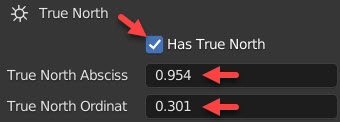
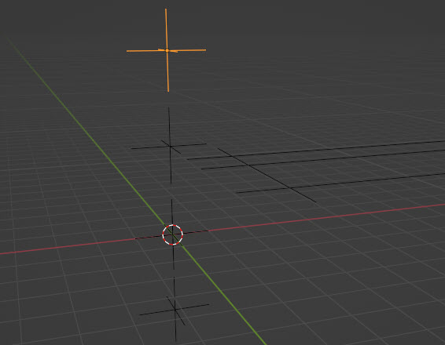
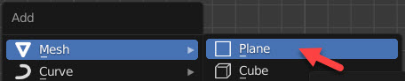
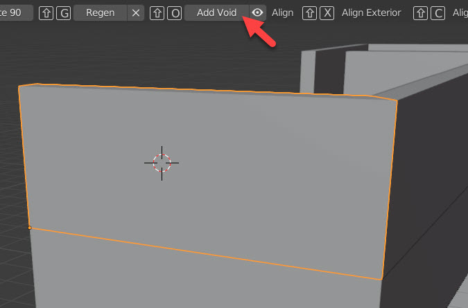
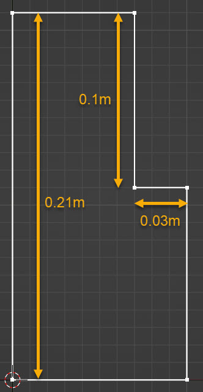
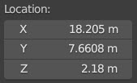
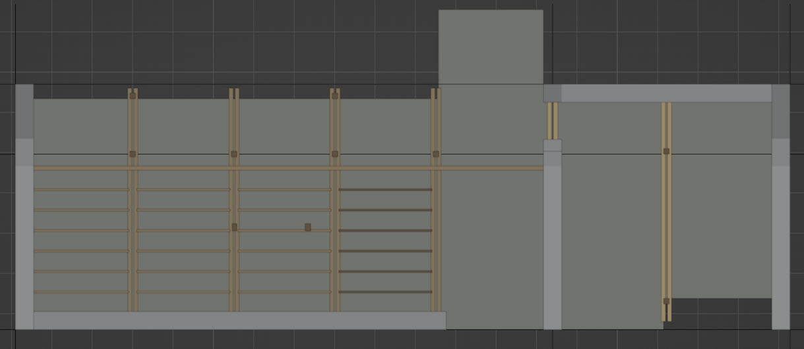
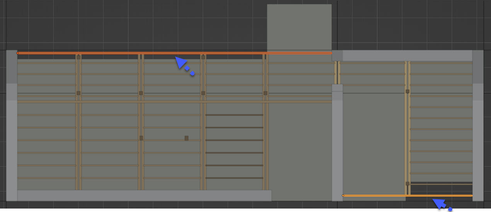
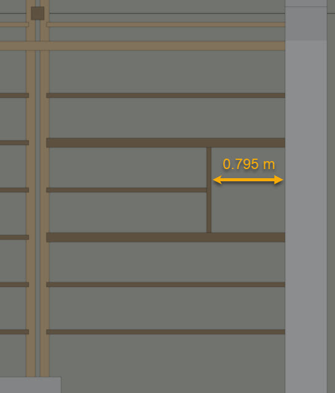

⚠️ L'add-on BlenderBIM et ce tutoriel sont en développement.
Bugs en cours de report :
- Add IfcSlab on Cursor
⚠️ Les interfaces 3D sur ce site sont basées sur IFC.js, projet open source également en développement.
Concept de l'IFC natif
Créer directement une donnée interopérable, accessible, indépendante et durable
Traditionnellement, l'IFC est considéré comme un format d'export non éditable, servant à partager une maquette numérique modélisée dans un format propre à votre logiciel (.rvt pour Revit, .pln pour Archicad, etc). Cela implique des limites et erreurs de conversion propres à chaque logiciel, ce qui bride son interopérabilité.
Pour y parer, BlenderBIM propose de modéliser et informer son projet directement et exclusivement selon le schéma de standardisation de la donnée de buildingSMART, soit en IFC natif. A tel point que ce qu'il est possible de faire sur Blender mais n'existe pas en IFC n'est pas pris en considération par BlenderBIM.
Pour en savoir plus sur le concept d'IFC natif, consulter cet article par Bruno Postle et Dion Moult : Native IFC
Modéliser en IFC natif assurera à votre maquette numérique d'être construite sur une donnée interopérable, accessible à tous, indépendante du logiciel de création et durable.
Blender est une fenêtre sur votre IFC
Ainsi Blender n'est finalement qu'une fenêtre sur votre IFC. Votre fichier .blend importera bien peu, vous pourrez réimporter à tout moment votre .ifc dans un fichier blender vierge.
Pour vérifier l'avancée de votre travail, vous pouvez importer votre IFC dans une visionneuse BIM. Il en existe des gratuites comme BIMvision, et bientôt une page sur ce site vous permettra d'importer votre IFC directement sur navigateur.
IFC4
Le schéma IFC évolue, mais les versions sont rétrocompatibles ce qui sécurise la durabilité de votre donnée. Vous pourrez réouvrir votre maquette numérique dans 20 ans, et ce sans dépendance à aucun logiciel. Nous travaillerons en format IFC4, comme conseillé par la communauté BlenderBIM.
Représentations géométriques : Solids, Tessellations, etc.
Modéliser nativement en IFC implique de s'en tenir aux définitions standardisées et d'être bien conscient de la nature géométrique des éléments que l'on ajoute à sa maquette, car cela peut avoir une influence sur la donnée. On va rencontrer principalement deux types de représentation géométrique qu'accepte l'IFC :
-Solid : résultat d'opérations paramétriques ou booléennes; par exemple un mur avec une valeur d'extrusion pour son épaisseur, et son sommet coupé par un pan de toiture. => Forme limitée mais paramétrique.
-Tessellation : c'est une sorte de mesh, la surface de l'objet est définie par une somme de triangles. Blender est le logiciel idéal pour ce type de modélisation => Toute forme envisageable, mais non paramétrique.
D'autres représentations géométriques sont envisageables, mais moins courantes (nuage de point par exemple).
Aussi, un élément IFC peut avoir, en plus ou à la place, une représentation 2D (e.g. mobilier), ou ne pas avoir du tout de représentation géométrique (e.g. une phase de construction).
Démarrage du Projet
Démarrer Blender et supprimer le cube, la lumière et la caméra de base.
Créer un fichier IFC à l'intérieur de Blender
-Dans l’onglet Scene des propriétés, dérouler le menu IFC Project et cliquer Create Project avec les paramètres suivants :
Résultat dans l'Outliner:

Vous avez créé l’arborescence qui organisera votre modèle selon le schéma IFC4.
Sauvegarder le fichier .blend = Exporter le fichier .ifc
-Enregistrer le document Blender (RC Ctrl + S), en définissant son emplacement et son nom.
-Le logiciel vous propose ensuite d’exporter un fichier IFC. Définir un emplacement, un nom et cliquer Export IFC.
Sous les paramètres de scène > IFC Project Info > IFC Project, vous trouverez le bouton dédié Save Project pour sauvegarder ce fichier IFC au long de la modélisation.
Nous sommes bien en présence de deux fichiers, le .ifc étant lié dans le .blend. Au besoin, par exemple en cas de bug ou pour vous assurer de l'état de l'IFC, vous pouvez réimporter votre fichier IFC dans un nouveau fichier Blender vierge à l'aide du même menu (bouton: Load Project).
Nommer le projet
-Sélectionner l’objet IfcProject dans l’Outliner.
-Accéder à ses attributs et changer son nom en "Villa Le Sextant" :
Ceci a pour effet de changer également automatiquement le nom de la Collection :
IFC Georeferencing
La nécessité du géoréférencement est expliquée théoriquement en 3. Convergence GIS-BIM
-Dans les propriétés de la Scene, dérouler les menus IFC Geometry > IFC Georeferencing et cliquer sur le + pour ajouter un géoréférencement :
-Cliquer le crayon pour entrer en mode édition des données :
Informer le SCR :
-Sous Projected CRS, renseigner dans le champ Name le code EPSG du SCR (=Système de Coordonnées de Référence) Lambert 93 - CC46 de la Zone 5 du système métrique français = EPSG:3946
Pour en savoir plus, consulter cette page de formation à QGIS par l'Inrap.
📝 Conformément aux recommandations de buildingSMART le champ Name devrait être tiré de la liste reconnue par l'European Petroleum Survey Group (EPSG) ; si les indications y sont suffisamment claires, le reste des champs n’est pas nécessaire.
Informer les coordonnées de géoréférencement
-Sous Map Conversion, renseigner dans les champs Eastings et Northings respectivement les valeurs de longitude = 375016.2 et latitude = 6518395.4 du Point de référence Planimétrique = PrefP
Ce point git à l'origine 0, 0 du modèle IFC.

-Renseigner ensuite sous OrthogonalHeight l'altitude 12.3 du Point de référence d'Altitude = PrefK, altitude au dessus de la mer du rez-de-chaussée fini de votre projet.
Ce point git quelque part sur le plan XY du modèle IFC, soit avec une valeur Z=0.
📝 Ces points vous seront donnés avec précision sur un projet professionnel par un géomètre. Voir l’approfondissement de la Convergence GIS-BIM pour apprendre à obtenir sur QGIS des points qui peuvent suffire à des usage de conception, par exemple des études d'ensoleillement.
📝 Nous avons à faire à deux points distincts, puisque généralement le PrefP est externe au projet, matérialisé par une borne. Alors que le PrefK est interne au projet, indiquant le sol fini du rez-de-chaussée.
Ces points peuvent, mais ne doivent pas indispensablement, être modélisés dans l'IFC sous forme de deux pyramides inversées. Ces métadonnées suffisent.
Informer l’orientation par rapport au nord géographique
Sous True North, cliquer Has True North et compléter avec les valeurs 0.954 et 0.301 comme suit :
-Sortir de l’édition en validant les changements avec la coche :
IfcGrid & IfcBuildingStorey
IfcGrid
-Ajouter une IFCGrid :
Résultat :
-En mode Edition, déplacer un à un les IfcGridAxis selon les cotes suivantes, et avec deux mètres de marge à chaque extrémité :
| X à A | 3.6 m |
| A à B | 4.36 m |
| B à C | 1.74 m |
| Y à 01 | 5.1 m |
| 01 à 02 | 13.3 m |
| 02 à 03 | 5.88 m |
📝 L'image ci-dessus est issue d'une mise en page, que nous verrons à un prochain chapitre. Le résultat visuel que vous devez obtenir ici est celui de la capture suivante.
Effectuer ces déplacements en mode Edition a conservé l'origine de tous ces objets à 0,0 :
IfcBuildingStorey
La donnée d'une maquette IFC est structurée en étages, traduits dans l'arborescence Blender par des Collections dans lesquelles nous rangerons tous les éléments construits. Nous allons créer les étages suivants :
| IfcBuildingStorey.Name | IfcBuildingStorey.LongName | Hauteur |
|---|---|---|
| S1 | Sous-sol | -2.23 m |
| 00 | Rez-de-chaussée | 0.00 m |
| 01 | Etage | 2.38 m |
| TT | Toiture | 4.80 m |
-Renommer l'objet du seul étage existant pour l'instant : IfcBuildingStorey/00. Cela modifie automatiquement le nom de la Collection :
Pour ajouter un étage :
-Dans la collection IfcBuilding/My Building, ajouter à l'origine un objet Blender Empty > Plain Axes :
Résultat :
Dans les propriétés de cet objet, le déclarer comme IfcBuildingStorey :
Renommer et déplacer en Z selon le tableau plus haut.
Résultat :
IfcElementType & IFC Material
Créer un IfcWallType
Un type d'objet définit des propriétés communes qui s'appliquent à toutes ses occurrences.
-Ajouter à la scène un élément Empty > Plain Axes, puis le déclarer comme IfcWallType :
Résultat :
-Renommer : Pierre 450mm
Créer un IfcMaterial à affecter à ce IfcWallType :
-Ajouter à la scène un plan
-Avec le plan sélectionné, accéder aux propriétés de matériau :
-Ajouter un nouveau matériau :
-Renommer : Pierre
Pour l’instant, nous avons créé un matériau simplement dans Blender. Pour en faire une donnée IFC : descendre dans l’arborescence et cliquer Create Ifc Material.
-Supprimer le plan.
Définir les couches du IfcWallType
-Sélectionner le IfcWallType :
-Sous les propriétés de l’objet > Ifc Object Metada > Ifc Object Material : Dérouler Material Type et choisir IfcMaterialLayerSet :
Cette manipulation permet de déclarer que ce type de mur est défini par un ensemble de couches horizontales.
-Ajouter un ensemble de couches en cliquant le + :
-Editer en cliquant le crayon :
-Renommer l’ensemble de couches Pierre et ajouter l’Ifc Material “Pierre” de la liste déroulante avec le + :
-Accéder aux propriétés de la couche en cliquant le crayon :
-Entrer une épaisseur de 0.45m dans le champ LayerThickness puis valider avec le vu:
-Valider également les modifications sur l’ensemble de couches :
Vérifier dans le N-Panel :

Ifc Style
Pour changer la couleur de base d'un matériau, entrer dans le réglage propre à l'interface de base de Blender :
Choisir pour la pierre les réglages suivants :
Descendre dans le menu et enregistrer cette modification dans l'IFC en ajoutant un IFC Style à l'IFC Material :
📝 En cas de modification de la couleur, mettre à jour l'opération dans l'IFC en cliquant ce même bouton :
IfcWall & BIM Tool
Rappelons qu'une maquette IFC est structurée en étages. Ainsi un mur qui apparaît continu sur plusieurs étages, sera modélisé en plusieurs éléments indépendants, un par étage.
BIM Tool - Dessiner un IfcWall
-Sélectionner dans l'Outliner la collection de l'étage 00, ce qui aura pour effet d'y ranger le mur que nous allons créer.
-Déplacer le Cursor au début de l'Axe A :
📝 Plutôt que d'activer l'outil, on peut déplacer le Cursor juste avec MAJ + Clic droit.
-Activer le BIM Tool :
Le seul type d'objet créé pour l'instant est sélectionné d'office :
-Taper Maj+A pour ajouter une occurrence de ce type. Résultat :
Mise en garde
📝 Garder à l'esprit que vous travaillez de la donnée IFC : la géométrie affichée par la scène 3D n'est qu'une lecture par Blender de votre fichier IFC. Ce mur est un solide répondant à des paramètres IFC. Pour y apporter des modifications, utiliser le BIM Tool proposé par BlenderBIM permettra de modifier cette géométrie en même temps que les paramètres sous-jacents, et donc de bien modifier ce mur à l'intérieur de l'IFC. Nous verrons plus tard comment donner à un élément une représentation géométrique qui est une tessellation, c'est-à-dire un mesh capable d'encaisser des modifications de type modélisation Blender.
Contre-exemple :
Si vous modifiez la hauteur de ce mur par exemple :
-en changeant la valeur Z dans les Dimensions du N-Panel
-ou en déplaçant sa face supérieure en Edit Mode comme ci-dessous :
Cette modification ne sera pas enregistrée dans l'IFC. Ainsi si vous réimportez ce fichier IFC dans un Blender vierge ou dans une visionneuse IFC quelconque, cette modification n'aura pas été enregistrée.
Hauteur du mur
Pour changer la hauteur du mur, le sélectionner et entrer la valeur numériquement dans le champ Height du BIM Tool, puis cliquer le symbole de mise à jour pour valider.
-Soit dans la barre supérieure :
-Soit dans le N-Panel sous Tool :
Jonctions entre les murs
Le BIM Tool offre des outils pour vous aider à gérer les jonctions entre les murs :
-Déplacer le premier mur au long de l'axe A comme suit :
-Puis ajouter un nouveau mur sur l'axe 01 et tourner le de 90° comme suit :
-Sélectionner les deux murs, puis cliquer la commande Mitre du BIM Tool (Raccourci Maj + Y) :
Résultat :
Prolonger un mur
BlenderBIM propose également un outil pour prolonger un mur jusqu'au Cursor. Nous allons nous aider d'un plan pour placer le Cursor où nous le voulons :
-Ajouter à la scène un plan (penser à sortir momentanément du BIM Tool sinon vous ajouterez un nouveau mur avec le raccourci MAJ + A), lui donner une dimension X de 10.665 m, le déplacer à l'angle des deux murs et placer le Cursor à son autre extrémité :
-Réactiver le BIM Tool, sélectionner le mur et cliquer Extend (ou Raccourci MAJ + E) :
Résultat :

Poursuivre la modélisation du Rez-de-chaussée selon le plan suivant :
Le niveau 0.0 du logiciel indique le rez fini du projet. Sélectionner tous les murs et les descendre en Z de -0.02 m, pour que leur base parte du radier que nous modéliserons plus tard.
Passer à la modélisation des murs du sous-sol :
Attention à vous placer dans la Collection de cet étage.
-Ajouter un mur avec le BIM Tool. Celui-ci repère l'étage et y positionne la base du mur.
Or cet étage donne le plancher fini de la cave. Notre mur possède des fondations : le déplacer en Z de -0.8 m :
-Donner une hauteur de 2.86 m, de sorte à laisser 17 centimètre entre son sommet et le niveau 00 :
Pour éviter de répéter ces opérations, plutôt que de rajouter les prochains murs avec le BIM Tool, privilégier de dupliquer ce premier mur avec MAJ + D
📝 Si vous préférez modéliser en vue de dessus (Raccourci 7 du Pavé Numérique), ne pas hésiter à masquer toute la Collection de l'étage 00.
-Modéliser selon les cotes suivantes :
Résultat attendu en 3D :
Etage 01
-Dupliquer tous les murs de l'Etage 00 vers l'Etage 01 :
-Dans l'Outliner, ranger ces éléments dans la Collection de l'Etage 01 :
IfcHalfSpaceSolid & IfcOpeningElement
Réflexion sur la modélisation BIM : importance de la donnée
A l'étage, le sommet des murs est coupé par les pans de toiture. Le plus simple géométriquement serait de déclarer leur représentation géométrique comme tessellation pour leur donner la forme libre que l'on souhaite.
Or ce faisant, ces murs ne pourraient plus être du type que nous avons créé tout à l'heure, car il est défini par une épaisseur qui ne saurait être interprétable sur une forme libre. Mais nous voulons conservé cette métadonnée importante, donc nous allons adapter notre façon de modéliser en soustrayant à ces murs des éléments "vides", que nous allons pouvoir quant à eux modéliser librement.
Remarque sur les IfcHalfSpaceSolid
Un IfcHalfSpaceSolid définit un plan ou demi-plan dans l'espace à utiliser comme opérateur d'une soustraction booléenne : typiquement à utiliser pour soustraire la partie supérieure d'un mur coupé par un pan de toiture incliné.
📝 Cette option n'a pas encore été développée dans BlenderBIM ; ainsi nous modéliserons les volumes à soustraire des murs comme des IfcOpeningElements, comme pour des fenêtres ou portes.
📝 Un IfcOpeningElement ne peut couper qu'un seul élément, donc il faudra en créer un pour chaque mur.
Créer un IfcOpeningElement, le modifier et l'appliquer sur un mur
Sélectionner le mur suivant :
Régler les accrochages sur face :
Puis placer le Cursor arbitrairement sur la face extérieure du mur, et cliquer Add Void ou son raccourci Maj+O :
Vous avez créé un élément Void, mais il faut encore l'appliquer au mur. Sélectionner les deux élément et cliquer Apply Void ou Maj+O :
Ceci a pour effet de masquer le Void. Le réafficher en sélectionnant le mur et en cliquant l'icône oeil :
Changer la hauteur du mur à 3.30 m :
Modifier le Void selon les dimensions ci-dessous. Vous pouvez le faire en Mode Edition.
📝 Pour éviter toute mauvaise surprise lors de la soustraction booléenne entre le mur et son vide, sur ce logiciel où un autre sur lequel vous ouvrirez cet IFC, il vaut mieux éviter de laisser les faces du Void coplanaires à celle du mur. Nous le laissons dépasser ici arbitrairement de 50 cm.
📝 La différence booléenne ne s'automatise pas en direct. Pour appliquer vos modifications, cliquer le vu :
Editer à nouveau le Void. Pour réaliser les rotations ci-après, régler le Point pivot de Transformation sur le 3D Cursor :
Puis déplacer le 3D Cursor sur le sommet pointé ci-dessous. Pivoter l'arête suivante de 81.5° en contraignant la rotation sur l'axe X :
Répéter cette opération sur l'arête l'autre côté de l'élément d'une valeur de rotation de -75.6°
Rendre les accrochages actifs également sur les opérations de mise à l'échelle :
Pour prolonger les deux faces obliques en conservant les angles, mettre à l'échelle (RC : S) l'arête en contraignant la transformation sur le plan YZ (cliquer Maj X) :
Répéter de l'autre côté. Puis extruder (RC : E) la face supérieure pour englober toute la partie supérieure du mur :
Enfin, extruder la face inférieure de 0.244 m :
Appliquer ces modifications. Résultat :
Poursuivre de la même manière avec tous les autres murs de cet étage, à l'exception de celui qui fait l'angle avec le mur que nous venons de modéliser. Comme il ne subit pas de déformation par le toit, lui donner une hauteur de 2.42 m puis modifier la jonction en cliquant les deux murs dans l'ordre suivant puis cliquer Butt (RC : MAJ+T) :
Conseils de modélisation :
📝 BlenderBIM triangule automatiquement tous les points pour créer les tessellations dans l'IFC. Pour fusionner momentanément deux faces coplanaires ce qui facilite la modélisation : Delete -> Limited dissolve :
📝 Pour effectuer une coupe sur une face, appeler l'outil Knife avec le raccourci clavier K :
Résultat attendu et cotes :
IfcSlab
Précisons d'abord qu'une IfcSlab catégorise aussi bien une dalle d'étage que de toiture, et qu'elle ne désigne que sa partie constructive. Ainsi les finitions supérieure ou inférieure sont à modéliser et informer séparément comme IfcCovering. Notons les types particuliers de dalle que sont les paliers (landing) et les dalles sur sol (BASESLAB).
📝 Un radier béton est un type de dalle sur sol particulier en terme de structure, qui répartit les charges sur toute sa surface dans des projets à forte charge ou sur des sols de moins bonne qualité, contrairement à des fondations à semelles. Ce comportement structurel particulier lui vaut parfois d'être catégorisé comme IfcFooting plutôt qu'IfcSlab en vu d'un usage analytique de la maquette numérique.
De la même manière que nous avions créé un IfcWallType, créer les IfcSlabType suivants:
| Predefined Type : | Name : | IFC Material : | IfcMaterialLayerSet / LayerSetName : | IfcMaterialLayerSet / LayerThickness : | IfcMaterial / Base Color (Hex) : |
|---|---|---|---|---|---|
| BASESLAB | Béton 150mm | Béton, coulé sur place | Béton, coulé sur place 150mm | 0.15 | 999A91 |
| LANDING | Béton 170mm | Béton, coulé sur place | Béton, coulé sur place 170mm | 0.17 | 999A91 |
| FLOOR | Plancher intérieur 40mm | Chêne clair | Chêne clair 40mm | 0.04 | B4986E |
| FLOOR | Plancher extérieur 40mm | Pin | Pin 40mm | 0.04 | D3C2AA |
Activer le BIM Tool, puis ajouter au sous-sol (ne pas oublier d'être dans la bonne Collection) une dalle de Béton 170mm.
Entrer en édition de cette dalle à partir du bouton suivant du BIM Tool :
Cela active un série d'outils de dessins CAD pour modifier le profil en plan de la dalle :
Constater que vous avez bien basculé en mode Edition :
📝 Il est possible aussi d'utiliser les raccourcis traditionnels de transformations (G, S, R).
Suivre les dimensions suivantes :
📝 Pour ajouter un ou des sommet(s) sur une arête : Edge -> Subdivide
Sortir du Mode Edition en validant avec le bouton suivant du BIM Tool : (sans quoi, juste avec Tab, vos modifications ne seront pas enregistrée dans l'IFC)
Noter l'origine de l'IcfSlab à sa face inférieure. Il faut donc déduire son épaisseur. Lui donner une position de Z de -2,40 m :
Poursuivre avec la dalle du rez en Béton 150mm (position Z : -0.17 m) :
Poursuivre avec les dalles d'étage en bois (position Z : 2.34 m) :
Résultat :
Bug d'affichage des dalles dans IFC.js reporté.
IfcColumn
Alors que nous avons défini murs et dalle par leur épaisseur, nous allons définir les poteaux par leur section.
Créer l'IFC Material "Chêne foncé" puis les IfcColumnType suivants :
| Predefined Type : | Name : | IFC Material : | IfcMaterial / Base Color (Hex) : |
|---|---|---|---|
| COLUMN | Bois extérieur 140x140mm | Chêne foncé | 755C33 |
| COLUMN | Bois intérieur 120x180mm | Chêne foncé | 755C33 |
| COLUMN | Bois intérieur 140x180mm | Chêne foncé | 755C33 |
Pour chacun de ces types, définir un IFC Object Material comme suit :
Editer en cliquant le crayon puis ajouter le matériau Chêne foncé :
Editer encore un cran en-dessous avec le crayon pour définir le profil comme rectangulaire :
Puis conférer à ce profil ses valeurs X et Y :
Valider ces modifications en cliquant les différents vus qui ont pris la place des crayons.
Précisions sur la couleur d'affichage des IFC Material
📝 Attention, l'IFC peut déduire la couleur d'affichage d'un objet de plusieurs paramètres dépendant de la définition de son matériau, et ces paramètres sont en plus interprétés par les réglages proposés de base par Blender pour gérer les matériaux. S'y ajoute la question de la pertinence ou non de texturer un IFC, qui est un débat en cours pour les évolutions futures de l'IFC.
Pour l'instant, constater que pour rendre une couleur effective sur un IfcColumn, il faut désactiver le bouton Use Nodes avant de choisir une couleur :
Placer les IfcColumn suivants :
Au rez-de-chaussée, suivre ces cotes (tous les poteaux sont de type 140x140, sauf les deux pointés par les flèches bleues) :
Donner à chacun de ces poteaux du rez-de-chaussée une hauteur de 2.51 m et une position par rapport à l'étage de -0.17 m
Dupliquer les poteaux suivants du rez au 1er étage, en changeant bien ces éléments de collection dans l'Outliner :
Concernant les hauteurs à cet étage, donner à tous -0.04 m de décalage en bas et une hauteur de 2.46 m sauf pour le poteau suivant, à 3.03 m :
Résultat :
IFC Profiles & IfcBeamType
Généralement, une poutre est typiquement un produit préfabriqué issu de l'industrie, et donc avec des formes et dimensions standardes. Le schéma IFC offre ainsi toute une série de sortes de profils (en C, en L, etc) à définir par des paramètres. L'alternative consiste à définir son propre profil arbitraire par son dessin en 2D.
Nous créerons d'abord les profils, puis les types de poutres que nous définirons par ces profils.
Créer avec des paramètres un profil de forme standardisée IfcRectangleProfileDef
Dans les propriétés de la scène > IFC Geometry > IFC Profiles, éditer avec le crayon :
Dans la liste déroulante, choisir IFCRectangleProfileDef puis ajouter un profile avec le plus :
Entrer en édition du profil en cliquant le crayon :
Entrer le nom et les valeurs suivants :
Valider avec le vu puis répéter avec les deux profils suivants :
Créer avec un dessin son propre profil arbitraire IfcArbitraryClosedProfileDef
📝 Il existe dans le schéma IFC un profil en L à prédéfinir par des paramètres : IfcLShapeProfileDef. Mais il impose des épaisseurs égales entre les deux branches du L, ce qui ne correspond pas aux profils que nous voulons créer ici.
Ajouter depuis la liste déroulante un IfcArbitraryClosedProfileDef :
Renommer puis éditer ce profil :
Son dessin en 2D apparaît alors à l'origine du projet, en Edit Mode.
Placer vous en vue de dessus (7 du pav. num.) puis zoomer sur la sélection (. du pav. num.) :
Dessiner le profil suivant (Pour ajouter un sommet à une arrête, sélectionner puis Edge > Subdivide, ou Ctrl+R) :
Valider l'édition de ce profil en cliquant les boutons suivants :
Répéter avec les 3 profils suivants :
100x210mm :
100x150mm :
100x160mm :
Résultat :Créer un IfcBeamType défini par un profil :
Nous créerons les IfcBeamType suivants :
| Predefined Type : | Name : | IFC Material : | IFC Profile | |
|---|---|---|---|---|
| JOIST | Solive Chêne clair 50x110mm | Chêne clair | 50x110mm | IfcRectangleProfileDef |
| JOIST | Solive Chêne foncé 50x110mm | Chêne foncé | 50x110mm | IfcRectangleProfileDef |
| JOIST | Solive 100x110mm | Pin peint foncé | 100x110mm | IfcRectangleProfileDef |
| JOIST | Solive 100x150mm | Chêne clair | 100x150mm | IfcRectangleProfileDef |
| T-BEAM | Bastaing 100x150mm | Chêne clair | 100x150mm | IfcArbitraryClosedProfileDef |
| T-BEAM | Bastaing 100x160mm | Chêne clair | 100x160mm | IfcArbitraryClosedProfileDef |
| T-BEAM | Solive avec Encastrement 100x200mm | Chêne clair | 100x200mm | IfcArbitraryClosedProfileDef |
| T-BEAM | Bastaing 100x210mm | Bois de construction | 100x210mm | IfcArbitraryClosedProfileDef |
Au préalable, créer les deux IFC Material suivants (penser à désactiver Use nodes) :
| IFC Material | Color |
|---|---|
| Pin peint foncé | #42220C |
| Bois de construction | #DFC086 |
Pour créer un IfcBeamType : ajouter à la scène un Empty>Plain Axes, puis le déclarer en IfcBeamType :
Renommer :
Ajouter un IfcMaterialProfileSet, ce qui définira ce type par son profil que nous avons créé au précédent chapitre :
Editer avec le crayon, choisir les valeurs selon le tableau plus haut, ajouter avec le plus puis valider l'édition avec la coche
IfcBeam & IFC Array
Ajouter une IfcBeam
Comme les dalles, on classe les poutres dans l'étage qu'elles supportent. C'est aussi pourquoi nous avons créé un étage supplémentaire spécialement dédié au toit. Commençons donc ici par le premier étage, en nous plaçant dans la bonne Collection :
Pour voir les poutres en vue de dessus, cacher les dalles du 1er étage dans l'Outliner (Rac. : H)
Solive avec Encastrement 100x200mm
Activer le BIM Tool. Sélectionner le type suivant et entrer une longueur de 12.685 :
📝 L'icône à droite du menu déroulant des types ouvre une galerie des types que contient l'IFC, avec leur profil :
📝 Le menu Axis permet d'ajuster l'alignement du profil de la poutre par rapport à l'origine de l'objet :
Ajouter une poutre, la pivoter en plan de 180° et lui donner l'emplacement suivant :
Résultat :
Bastaing 100x160mm
Ajouter une poutre, la pivoter en plan de -90° et lui donner l'emplacement suivant :
Résultat en élévation nord : Dupliquer cette première poutre symétriquement par rapport à son poteau. Puis répéter sur les 4 poteaux suivants :Bastaing 100x210mm
Dupliquer la dernière paire de poutres de 2.887m vers l'Est.
Editer le type :
Ramener les extrémités de ces deux poutres entres les deux murs cadrant le passage.
Dupliquer ces deux dernières poutres de 282.09m vers l'Est, leur donner une longueur de 5.545m, puis les encastrer de 0.0995m dans le mur nord :
Solive Chêne clair 50x110mm
Ajouter une poutre de 2.36m et lui donner cet emplacement :
Résultat :
Dupliquer une série de poutres avec un IfcArray
Le schéma IFC supporte le concept de réseau, ou matrice, sous le concept d'IfcArray, qui duplique un élément selon une suite définie.
BlenderBIM range cette option sous les Modifiers de Blender. Avec la dernière poutre sélectionnée, ajouter un IFC Array :
Entrer en édition en cliquant le crayon, renseigner les paramètres suivants puis valider :
Résultat dans la scène :
Résultat dans l'Outliner :
⚠️ L'IFC Array a pour l'instant quelques bugs à l'édition et à la duplication, reportés ici :
https://community.osarch.org/discussion/1185/blenderbim-re-inventing-the-array-modifier-in-blender-to-make-it-suitable-for-copying-of-ifc-elem#latestRépéter l'opération sur les 3 rangées suivantes, avec le type chêne foncé sur la dernière. Au vu du bug sur la duplication des array, recréer à chaque fois la première poutre avec le BIM Tool.
-Adapter la longueur des poutres avec le Cursor et la commande Extend du BIM Tool (Maj E)
Ajouter une poutre de 2.36m et lui donner cet emplacement :
Résultat :

Ajouter cet array :
Résultat :

Répéter avec les rangées suivantes (avec, pour les deux dernières, des arrays de 3 et de 12) :
Ajouter les deux poutres suivantes, au ras des poutres transversales :
Solive 100x110mm
Compléter la 5ème rangée sud sans utiliser d'array, comme suit. Les deux poutres plus larges sont du type : Solive 100x110mm.
La commande Duplicate de Blender (Maj + D) bug pour l'instant avec BlenderBIM, qui ne duplique pas les éléments dans l'IFC. Éviter donc de l'utiliser et créer ces poutres une à une avec le BIM Tool :
Solive 100x150mm
Terminer avec l'avant-dernière rangée. Les poutres plus épaisses sont de type : Solive 100x150mm. Faire un array pour les poutres le long de l'ouverture :
Résultat (avec les dalles du 1er étage cachées) :
Résultat en 3D :